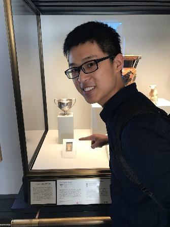

Yiyuan Li
Undergraduate, Nanjing University
Email: yiyuanlismail.nju.edu.cn bill.lyy.nisioptimumgmail.com


Undergraduate, Nanjing University
Email: yiyuanlismail.nju.edu.cn bill.lyy.nisioptimumgmail.com
|
|
[Code] - Implemented Hidden Markov model(HMM) and Viterbi Algorithm to predict the Chinese character or vocabulary word based on the previous pinyin input of the user; designed a user interface(UI) to provide customized interactive experience in text input. - Achieved providing both long vocabulary and infrequently used vocabulary to the user. |

|
[Demo] [Boundary Analysis] - Designed a detachable robot that can be used in climbing and search in complicated environments. - Mentored the structure design of teammates’, applied fluid mechanics and structure mechanics in stability analysis. - Processed motion planning by A* algorithm. - Achieved stable movement in aquatic environment and automatic resemble mechanism. |
 |
[Pdf][Code] - Analyzed restaurant reviews in Yelp using text processing techniques and latent semantic indexing. - Design a pipeline model for the team and implement the Support Vector Machine(SVM) part, utilizing punctuation to assist bag-of-words model to acquire a high predictability of stars (0.38 Root Mean Square Error) in classification. - Provided case study in explaining geographical features’ impact to restaurant judgment and demonstrating our model via analyzing distribution mode of restaurants’ locations and area average stars in Las Vegas. |
 |
[Task Description] [See Rotation] - Established a simple equipment from scratch includes a container that producing 30,000 V/m electric field, an insulate frame to support the film and related circuits. Result of this project won Merit Award in ６th China Undergraduate Physics Tournament(CUPT) 2015 |
Artifical Intelligence Track
Computer Science Track
Robotics Track
![[Demo]](static/Compliant Robotics/Unity 2016-07-21 12-32-41-55.gif){kind=link}
![[Boundary Analysis]](static/Compliant Robotics/Boundary condition.gif){kind=link}
![[See Rotation]](static/Physics/Liquid Film Motor/rotation.gif){kind=link}